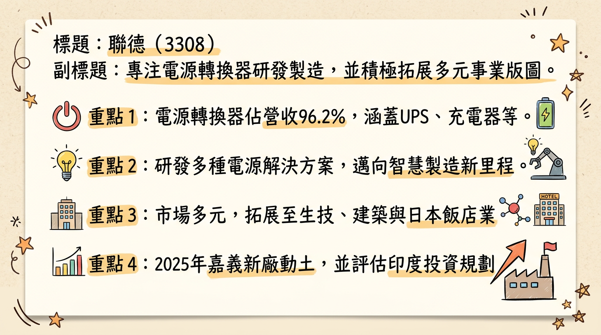
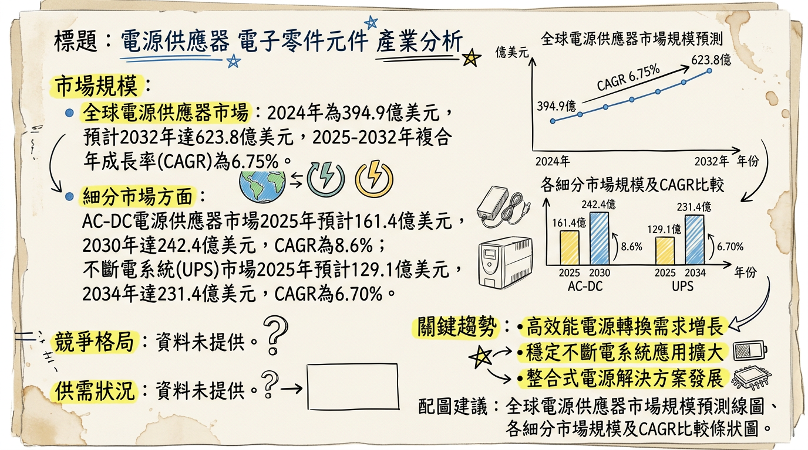
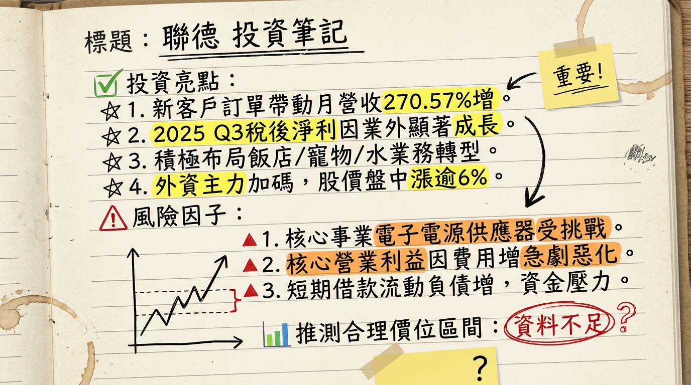

3308 聯德 深度研究報告
一句話摘要
聯德電子(3308)核心電源轉換器業務面臨挑戰，2025年第三季核心營業利益因營業費用激增而惡化，雖受惠於業外收入使淨利轉正，但高存貨週轉天數與短期資金壓力值得關注。公司積極拓展飯店與生技新事業，並規劃嘉義新廠及新竹CoPoS產線以尋求轉型，未來成長動能繫於新事業的市場開拓與智慧製造效益，短期營運仍具不確定性。
公司概覽
聯德電子股份有限公司（股票代碼：3308）成立於1988年2月2日，主要業務為研發、生產與銷售交換式電源供應器、不斷電系統（UPS）、充電器、適配器（Adapter）、網通產品以及開放式電源（Open Frame）等產品。近年來，公司積極推動多元化轉型，業務範疇已拓展至生物科技業（如gogi寵物舒活水、聯德生物極之水）、建築業以及飯店業（在日本經營飯店）。
業務與產品線
- 核心電子產品： 交換式電源供應器、不斷電系統（UPS）、充電器、適配器（Adapter）、網通產品、開放式電源（Open Frame）。
- 新事業： 生物科技（gogi寵物舒活水、聯德生物極之水）、建築業、飯店業（日本飯店）。
營收結構
根據2026年3月3日的資料：
| 業務類別 | 佔總營收比例 |
|---|
| 電源轉換器 | 96.2% |
| 其他營運事業部 | 3.9% |
製造基地與地區業務營收佔比
- 台灣生產據點： 嘉義（2025年10月20日嘉義馬稠後新廠開工動土，邁向智慧製造）。
- 海外投資規劃： 2024年8月20日參訪印度「班加羅爾」，評估投資規劃。
- 地區業務營收佔比 (2024年)：
* 亞洲：92.87%
* 日本：3.83%
* 歐洲：3.29%
* 台灣：0.01%
（此數據反映銷售地區而非生產基地的營收貢獻。）
所屬細分產業與相關題材
- 產業類別： 電子–電子零組件
- 細分產業： 電源供應器
- 相關題材：
*
交換式電源供應器： 公司核心主力業務。
* 數位化轉型： 受惠於雲端資料中心、5G基礎建設、工業自動化及智慧家庭對電源管理的需求。
* 電動車： 潛在成長動能，涉及充電設備、車用電子控制模組與電池管理系統。
* 半導體設備： 對穩壓及低雜訊電源的高標準需求。
* 多元化轉型： 積極佈局生物科技（寵物健康水、極之水）及飯店業（日本飯店）。
* 無人機： 2025年11月7日赴日參訪VISIONOID，探討深化無人機合作新契機。
核心競爭優勢
穩固的電源轉換器基礎： 儘管面臨挑戰，聯德在電源轉換器領域擁有長期營運基礎，此為公司轉型的核心技術支撐。
積極的多元化轉型策略： 透過投資飯店業與生物科技，旨在分散營運風險，尋求新的營收成長曲線，降低對單一電子業務的依賴。
產能擴張與智慧製造佈局： 嘉義馬稠後新廠的動工以及新竹高階CoPoS產線的規劃，展現公司提升製造能力和搶佔未來高階封裝市場的企圖心。
探索新興技術應用： 積極評估無人機與印度市場，顯示公司對新興科技領域及海外市場的策略性佈局。
財務分析
月營收趨勢
聯德 (3308) 最近 6 個月的月營收數據：
| 月份 | 營收金額 (千元) | 年增率 (YoY) | 月增率 (MoM) |
|---|
| 2026年01月 | 515 | -2.83% | -74.59% |
| 2025年12月 | 2,027 | 306.21% | 270.57% |
| 2025年11月 | 547 | 1.3% | -0.36% |
| 2025年10月 | 549 | 0% | 10% |
| 2025年09月 | 499 | -5.5% | -10.4% |
| 2025年08月 | 557 | 15.8% | 0.5% |
季度數據
聯德 (3308) 最新公布的2025年第三季季度財務數據：
- 季營收： 4.935 百萬元 (或4,935千元)
- 毛利率： 61.65%
- 營業利益率： -613.37%
- EPS： 0.62 元
全年度營收與 EPS
- 2024年實際營收： 67.774 百萬元
- 2024年實際EPS： 0.99 元
- 2025年實際營收 (1-12月累計)： 8.02 百萬元
- 2025年實際EPS (累計至Q3)： 0.23 元
- 2025年第四季財報： 聯德 (3308) 的2025年度財務報告預計於2026年3月11日提報董事會，完整的2025年第四季財務數據及全年EPS尚未正式公布。
法說會重點
聯德 (3308) 最近一次法人說明會於2025年12月30日舉行，主要公布2025年第三季財務報告及未來展望。
- 核心業務挑戰與多元化轉型： 管理層指出公司核心電子電源供應器業務面臨挑戰，正積極尋求多角化轉型，大力拓展飯店業、寵物健康水及「極之水」等新事業。
- 2025年第三季財務表現分析： 稅後淨利和每股盈餘（EPS）的增長主要來自非經常性營外收入的顯著貢獻，而核心營業利益則因營業費用急劇增加而嚴重惡化。
- 未來展望指引： 法說會報告對短期趨勢判斷，核心電源供應器業務可能持續面臨營運效率考驗。若無持續非經常性利多，下一季度淨利表現可能面臨壓力。長期趨勢方面，公司積極發展多元化業務，若新事業能順利開拓市場並貢獻營收獲利，將為公司建立更穩健的長期發展基礎。然而，管理層並未提供具體的下季或下半年量化財測指引。
- 產能利用率與資本支出： 未在公開資訊中找到聯德 (3308) 關於產能利用率及具體資本支出的數據。
券商觀點
目前未找到針對台股「聯德」（3308）在2025年至2026年期間有任何券商發布具體目標價、EPS預估數字，或重大調升/調降評等的最新報告。
⚠️重要提示： 搜尋結果中曾出現針對「聯德控股-KY」（4912）的券商報告，其中包含康和證券於2026年1月2日給予「看多」評等，目標價121元，並預估2025年EPS約4.5元的資訊。此資訊是針對股票代碼4912的「聯德控股-KY」，而非本報告所關注的「聯德」（3308）。
財報深度分析
利潤率趨勢
聯德（3308）近期的利潤率波動劇烈，尤其在營業利益率方面多次呈現負值，稅後淨利率則高度依賴業外收支。
| 季度 | 毛利率 | 營業利益率 | 稅後淨利率 |
|---|
| 22025年第三季 | 61.65% | -613.37% | 2243.86% |
| 22025年第二季 | 58.02% | 2.49% | -3537.91% |
| 22025年第一季 | 61.74% | -693.89% | 2123.53% |
| 22024年第四季 | -40.81% | -785.54% | 997.79% |
| 22024年第三季 | -134.54% | 2182.57% | 3384.44% |
| 22024年第二季 | 30.05% | 0.3% | 8.75% |
| 22024年第一季 | 25.2% | -137.99% | 25.2% |
根據2025年12月30日的法說會資訊，聯德電子在2025年第三季度的稅後淨利和每股盈餘在營外收入（年同比大幅增長237%）的顯著貢獻下實現了大幅增長。然而，核心營業利益卻因營業費用急劇增加而嚴重惡化，儘管營業費用總額減少50%，但營業淨利仍大幅下降148%。這清楚表明，公司的核心電子電源供應器業務可能面臨挑戰，而業外收支成為拉抬整體淨利的關鍵因素。
存貨分析
聯德（3308）的存貨管理面臨顯著挑戰。
| 季度 | 存貨週轉率 (次) | 平均售貨天數 (天) |
|---|
| 22025年第三季 | 0 | 31139.51 |
| 22025年第二季 | 0 | 28570.84 |
| 22025年第一季 | 0 | 31537.46 |
| 22024年第四季 | 0.01 | 8593.12 |
- 存貨週轉天數： 在2025年呈現極高的數字（超過3萬天），顯著高於過去十年區間的平均水平（單季1.17%~373.86%，2025年前9個月累積為1.2%）。
- 存貨異常堆積： 極高的存貨週轉天數明確顯示公司存在存貨異常堆積的現象，暗示銷貨能力出現問題，可能導致大量原物料、半成品或成品囤積，進而引發產品跌價損失或過期打消庫存的風險。
資本支出
- 近 3 年資本支出金額與趨勢： 未找到2024-2026年的具體資本支出金額數據。
- 未來資本支出計畫與預計新增產能：
* 公司於2025年12月3日宣布斥資新台幣11億元於新竹購入6,000坪土地，規模為現有工廠（一、二期總和）的3倍。
* 新竹土地預計於2026年動工，2028年投產。新廠將鎖定下一波CoPoS (Chip on Panel on Substrate) 需求，由於技術複雜度更高，CoPoS設備的平均售價(ASP) 預計比CoWoS設備高出50%。
其他財報重點
- 負債比率： 聯德的負債比率在2024年和2025年維持在50%左右的水平（2025年Q3為49.89%），尚屬合理。
- 自由現金流量趨勢： 截至今年初累積至今，每股自由現金流年成長率為-1,006.15%，顯示自由現金流大幅減少，可能反映營運活動現金流入不足或資本支出增加。
- 業外收支重大項目：
* 2025年第三季度的業外收支佔稅前淨利比為126.10%，顯示其對淨利的影響力巨大。
* 公司正積極拓展新事業，包括日本飯店業（經營「TRUST VALUE 北大塚」飯店）以及寵物健康水（GOGI WATER）和極之水（Extream water）等生物科技產品，尋求多元收入來源，這些將主要體現在業外收入。
股權異動
- 近期董監事/大股東申報轉讓紀錄： 未找到2025-2026年的董監事/大股東申報轉讓紀錄。
- 庫藏股買回紀錄： 未找到2025-2026年的庫藏股買回紀錄。
- 是否發行可轉換公司債（CB）： 未找到2025-2026年是否有發行可轉換公司債 (CB) 及轉換價格的最新資料。
- 近期增資或減資計畫： 若公司宣布進一步的權利發行(Rights Issues) 可能稀釋股權，這被視為一種潛在風險。
- 股利政策： 聯德（3308）在2024年和2025年均未發放股利。根據歷史資料顯示，自2011年以來，聯德均未發放現金股利或股票股利。
產業分析
聯德電子主要業務歸屬於電源供應器及不斷電系統市場。
產業數據
* 全球電源供應器市場在2024年價值為394.9億美元，預計到2032年將達到623.8億美元，2025年至2032年的複合年成長率（CAGR）預計為6.75%。
* AC-DC電源供應器市場：2025年市場規模預計為161.4億美元，到2026年將達到174.3億美元，複合年成長率為8.0%。
* 不斷電系統（UPS）市場：2025年全球市場規模為129.1億美元，預計將從2026年的137.8億美元成長到2034年的231.4億美元，複合年成長率為6.70%。
* AI伺服器NVIDIA平台電源供應器市場：TrendForce預估，此市場價值將從2025年的29億美元顯著成長至2026年的45億美元，年成長率高達56%。
* 目前AI伺服器電源供應器市場呈現供不應求的狀況。由於AI算力快速成長，帶動單晶片熱設計功耗（TDP）創下新高，機櫃系統功耗隨之飆升，導致對高功率、高效率電源供應器的需求劇增。
* 市場上的主要供應商（如台達電、光寶科）在AI伺服器電源業務領跑，由於供貨比例過高且產能持續吃緊，客戶可能會超額下單搶產能。光寶科表示，主要客戶要求2至3倍以上的產能，但公司會策略性控制擴廠幅度（約30%），維持供需缺口，避免未來產能過剩的降價風險。
未找到2025-2026年電源供應器產業的平均毛利率水準的最新公開資料。然而，台達電在高毛利產品如伺服器電源、自動化與資料中心解決方案的營收占比持續提升，顯示高階電源產品能帶來較高的毛利率水平。
競爭格局
全球主要電源供應器市場參與者：
| 公司名稱 | 提及市場 | 備註 |
|---|
| Schneider Electric (施耐德電機) | 電源供應解決方案、UPS | 市場主導者，創新模組化UPS系統和AI驅動能源管理平台。 |
| Siemens (西門子) | 電源供應解決方案 | 市場主導者。 |
| ABB | 電源供應解決方案、UPS | 市場主導者，2024年第一季推出下一代MNS數位開關設備。 |
| Huawei Digital Power (華為數位能源) | 電源供應解決方案 | 市場主導者。 |
| Eaton (伊頓) | UPS | UPS市場主要公司。 |
| Vertiv (維諦) | UPS | UPS市場主要公司。 |
| 台達電 (Delta Electronics) | 電源供應器、AI伺服器電源、UPS | 台灣龍頭，在全球電源供應器市場佔比高，UPS市場主要公司。 |
| 光寶科 (Lite-On Technology) | 電源供應器、AI伺服器電源 | 台灣主要供應商，與台達電在AI伺服器電源市場領跑。 |
| MEAN WELL Enterprises Co. Ltd. | 全球電源市場 | 主要市場參與者。 |
| TDK Corporation | 全球電源市場 | 主要市場參與者，2024年2月推出CUS400M系列AC-DC電源供應器。 |
目前未找到2025-2026年聯德電子與主要競爭對手（如台達電、光寶科等）在技術、產能、客戶、價格等方面的具體詳細比較數據。然而，台達電作為Tier 1領導廠商，在AI伺服器電源與液冷解決方案方面技術領先，並已開始出貨。光寶科也預計2025年AI伺服器相關零組件營收占比將超過10%。聯德電子作為中小型廠商，在嘉義新廠建設後，其產能與技術能否有效跟上產業龍頭，仍需時間觀察。
台灣同業比較：
| 公司名稱 | 營收規模 (億元) | 毛利率 (參考) | EPS (參考) | 業務亮點 |
|---|
| 台達電 (2308) | 龐大 | 高 | 優異 | AI伺服器電源領導者，液冷解決方案，高階產品佔比提升 |
| 光寶科 (2301) | 大 | 中高 | 良好 | AI伺服器相關產品成長快，出貨Liquid to Air系統樣機 |
| 群電 (6412) | 中 | 中高 | 良好 | High Power伺服器電源，智慧低碳解決方案，高瓦特數筆電電源 |
| 康舒 (6282) | 中 | 中 | 穩定 | 台灣主要電源供應器廠商之一，數據待更新 |
| 聯德電子 (3308) | 小 (2025年8.02百萬元) | 波動大 (2025Q3 61.65%) | 波動大 (2025Q3 0.62元) | 電源轉換器，積極多元化轉型，佈局飯店/生技/無人機 |
產業趨勢
AI伺服器對高功率、高效率電源的需求激增與電源架構轉型：
* 具體影響： AI算力爆發帶動單晶片TDP與機櫃系統功耗提升，促使電源供應器朝更高功率密度、高轉換效率發展。高壓直流電（HVDC）架構（如Meta、Google、Microsoft的±400V Mt. Diablo，NVIDIA的800V架構）加速導入，電源架構從嵌入式電源轉向機櫃內Power shelf。寬能隙半導體材料（SiC、GaN）應用增加，液冷散熱解決方案成為資料中心主流。
節能與永續發展：
* 具體影響： 全球對能源效率和減少碳排放的重視，驅動電源供應器朝更高效率、低功耗發展。各國政府推動更嚴格的能源效率標準。電源供應解決方案整合再生能源、智慧微電網和高效儲能系統。
物聯網（IoT）、5G通訊及電動車的普及：
* 具體影響： 這些應用對電源供應器提出了小型化、高可靠性、快速充電及特殊環境適應性等需求。AI驅動的電源優化應用於電網管理、提高效率。
對 聯德 而言的具體機會和威脅
*
高功率電源需求成長： 若聯德能投入AI伺服器、數據中心等高功率電源供應器研發與生產，可受惠於NVIDIA平台PSU市場2026年預計56%的年成長率。
* 嘉義新廠擴建與CoPoS佈局： 新廠建設為承接未來訂單提供產能基礎，新竹CoPoS產線更是瞄準高階半導體封裝市場，具高ASP潛力。
* 多元化轉型效益： 生物科技、建築業及飯店業的多元化發展，可能提供額外營收來源和分散營運風險。
*
技術升級與研發投入壓力： AI伺服器電源技術迭代快速，聯德若未能及時跟上HVDC架構、SiC/GaN材料、液冷等技術前沿，可能面臨市場份額被侵蝕的風險。
* 市場競爭加劇： 除了台達電、光寶科等龍頭，國際大廠及新進者也積極投入，競爭日益激烈。
* 傳統業務成長放緩： 傳統交換式電源供應器市場若面臨飽和或價格競爭加劇，將對營收獲利造成壓力。
* 高資本與安裝成本： 先進電源系統的高昂初始成本可能限制其市場普及速度。
相關投資題材的具體連結
- AI（人工智慧）伺服器： AI伺服器對高功率、高效率電源供應器的需求是電源產業最主要成長動能。聯德若能切入AI伺服器電源供應鏈，將直接受惠於單價和內涵價值提升的龐大商機。AI機櫃對備援電池模組（BBU）搭載率的提升也將增加價值。
- 電動車： 電動車發展推動對高效能充電器、車載電源轉換器等產品的需求。若聯德技術符合電動車產業嚴格要求，有機會拓展相關電源產品市場。
- 智慧電網與再生能源： 電源供應器在再生能源併網、智慧微電網、儲能系統中扮演關鍵角色。聯德在不斷電系統（UPS）的經驗，可延伸至智慧電網和儲能相關電源管理解決方案。
近期催化劑
2025年12月
- 新客戶/訂單： 2025年12月，聯德電子因「新客戶訂單出貨」，帶動當月合併營收達新台幣202.70萬元，較上月增加270.57%，較去年同期增加306.21%，創2024年6月以來新高。
- 法說會重要決議： 2025年12月30日舉辦法人說明會，公布2025年第三季財報及未來展望，管理層強調多元化轉型，但核心營業利益惡化，短期資金壓力需關注。
- 法人買賣超： 2025年12月31日，主力買超71張、外資同步加碼，顯示短線市場資金追捧。
2026年1月
- 營收表現： 2026年1月營收為新台幣51.50萬元，較上月份減少74.59%，較去年同期減少2.83%，主要因客戶暫停拉貨。
- 法人買賣超： 2026年1月1日股價漲停，法人近期有加碼跡象。2026年1月5日股價續強創高至23元，法人自營商連2日小幅加碼，短線人氣延燒。
2026年2月
* 2026年2月23日：外資買超33張，自營商買超9張，法人合計買超42張。
* 2026年2月24日：外資買超65張，自營商買超6張，法人合計買超71張。
* 2026年2月25日：外資買超53張，自營商買超15張，法人合計買超68張。
* 2026年2月26日：外資買超155張，自營商賣超22張，法人合計買超133張。
2026年3月
- 財報公告： 2026年3月3日公告，2025年度財務報告董事會預計於2026年3月11日召開。
- 法人買賣超：
* 2026年3月3日：外資賣超135張，自營商買超15張，法人合計賣超120張。
* 2026年3月4日：外資買超47張，自營商賣超22張，法人合計買超25張。
* 2026年3月5日：股價上漲2.1元至24.55元，漲幅9.35%，外資買超128張，自營商買超7張，法人合計買超135張。
⭐ 成長動能時間軸
- 2024年8月20日： 聯德電子參訪印度「班加羅爾」，評估投資規劃，尋求海外擴張機會。
- 2025年10月20日： 聯德電子嘉義馬稠後新廠開工動土，規劃邁向智慧製造，為未來產能擴充奠定基礎。
- 2025年11月7日： 聯德電子赴日參訪VISIONOID，探討深化無人機合作新契機，切入新興科技應用領域。
- 2025年12月： 公司因「新客戶訂單出貨」帶動當月營收達新台幣202.70萬元，較上月大幅成長270.57%。
- 2025年12月3日： 聯德電子宣布斥資新台幣11億元於新竹購入6,000坪土地，規劃作為未來新廠用地。
- 持續進行中：
*
新市場拓展： 持續發展飯店業（日本）、生物科技（寵物健康水、極之水）新事業，尋求多元營收來源。
* 高階製程佈局： 新竹新廠預計於2026年動工，2028年投產，鎖定高ASP的CoPoS需求，有望提升公司在高階半導體供應鏈的地位。
- 產業需求面： AI伺服器電源市場呈現供不應求，若聯德能有效切入，將受惠於高功率電源裝置的長期依賴增加。
2026 展望
成長動能
新事業的發展潛力： 公司積極拓展飯店業、寵物健康水及「極之水」等多元化新事業。若這些新事業能成功開拓市場並逐步貢獻穩健獲利，將為聯德電子帶來新的成長曲線，並降低對單一電子業務的依賴。
新廠產能的釋放與技術升級： 嘉義馬稠後新廠的建設將有助於提升公司製造效率和產能。更長期的佈局是新竹針對CoPoS需求的新廠，預計2026年動工、2028年投產，瞄準高階封裝市場，具備高單價潛力，為未來幾年的主要成長動能。
新客戶與新市場的開拓： 2025年12月新客戶訂單帶動營收，以及無人機合作和印度投資評估，都顯示公司積極尋求新客戶與新市場的努力，為潛在成長注入活水。
AI產業趨勢受惠機會： 儘管聯德目前在AI伺服器電源市場的具體參與度不詳，但整個電源供應器產業因AI算力需求爆發而受惠，若聯德能成功轉型並切入相關高功率應用，將有巨大成長空間。
風險
核心業務營運效率惡化： 2025年第三季核心營業利益因營業費用激增而嚴重惡化，顯示公司在主營業務的營運效率控制上仍面臨挑戰。若無法有效控制成本和費用，將持續壓抑獲利。
財務結構壓力： 資產負債表中短期借款及流動負債的顯著增加，以及自由現金流的大幅減少，可能引發對公司短期資金壓力的擔憂。
新事業不確定性： 新事業（日本飯店、寵物健康水、極之水）仍處於投入期或早期發展階段，其投入成本、獲利週期、市場接受度及競爭等均存在高度不確定性，短期內難以對整體獲利產生顯著貢獻。
存貨去化風險： 2025年存貨週轉天數極高，顯示存貨異常堆積。這不僅可能導致產品跌價損失，也反映銷貨能力不佳，對未來營運構成風險。
缺乏持續性非經常性利多： 近期淨利高度依賴業外收入。若無持續的非經常性利多，下一季度的淨利表現可能面臨壓力，難以維持穩定的獲利表現。
產業技術升級挑戰： AI電源產業技術迭代快速（HVDC、SiC/GaN、液冷等），聯德作為中小型廠商，若未能及時投入龐大研發資源並跟上技術前沿，恐面臨被領先者拉開差距的風險。
投資結論
聯德電子（3308）正處於一個關鍵的轉型期，核心電子電源供應器業務面臨營運效率挑戰，導致核心營業利益惡化，且其獲利能力目前高度仰賴非經常性業外收入。儘管公司積極佈局多元化新事業（飯店、生技）並規劃高階CoPoS新廠，但這些投資多處於初期階段，能否成功開拓市場並帶來實質獲利，仍具高度不確定性。此外，高存貨週轉天數與短期資金壓力的財務風險亦不容忽視。
綜合以上分析，我們提出以下3點投資結論：
短期營運承壓，轉型成效待觀察： 聯德核心業務的挑戰與營運費用失控，導致核心盈利能力顯著下滑。儘管2025年第三季因業外收入使淨利轉正，但這種獲利模式不可持續。投資人應密切關注公司在核心電源業務的營運效率改善情況，以及多元化新事業的具體營收貢獻。
長期動能浮現，但風險與時程兼具： 嘉義新廠和新竹CoPoS產線的規劃，以及無人機、印度市場的探索，顯示公司有提升技術與產能、切入高成長領域的企圖心。然而，這些投資需要龐大的資本支出和較長的投產週期（新竹CoPoS廠預計2028年投產），短期內對公司財報的貢獻有限，且新事業的市場競爭與獲利模式仍需時間驗證。
高度投機性，建議保守觀望： 考量聯德電子核心業務面臨挑戰、營業費用高企、存貨週轉緩慢及短期借款增加等諸多營運風險，儘管積極轉型，新事業仍處早期階段，貢獻具不確定性。因此，基於當前財報表現，其合理估值難以支撐顯著溢價。建議投資人短期應保持高度審慎，目標價區間暫定為新台幣 15-20 元，主要反映其現有資產價值與潛在轉型溢價的極低期望，任何上修需待核心業務營運效率顯著提升，且新事業能實質貢獻穩定獲利方能重新評估。風險偏好較高的投資者應密切關注公司每月營收表現及新事業的具體進展。
本報告由 AI 自動產生，資料來源為公開網路資訊，僅供參考，不構成投資建議。產生時間：2026-03-06 00:22
📊 資訊卡


